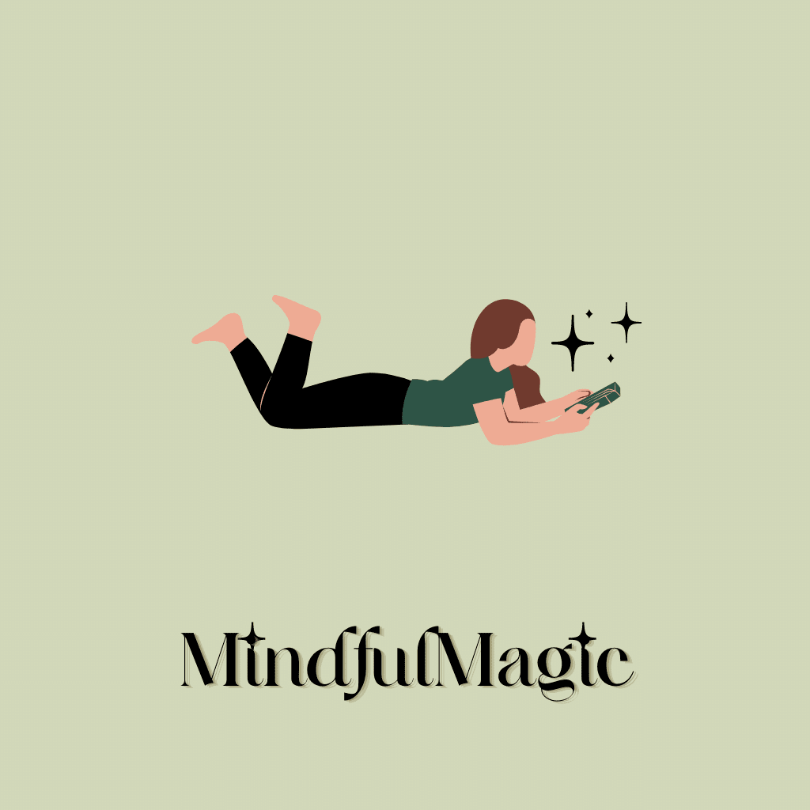
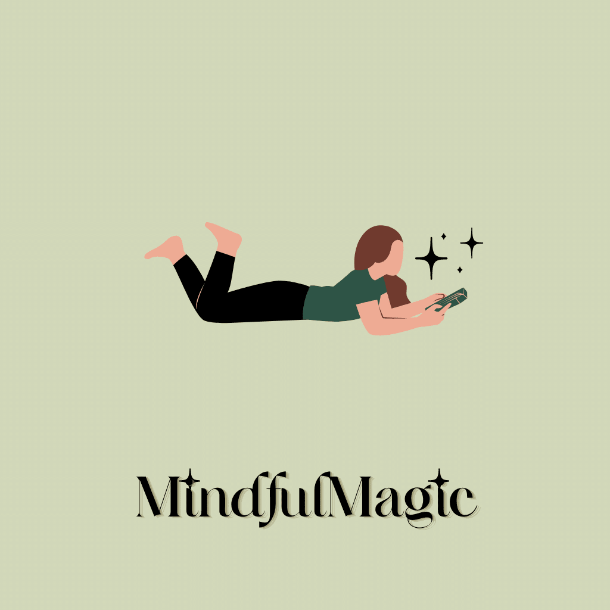
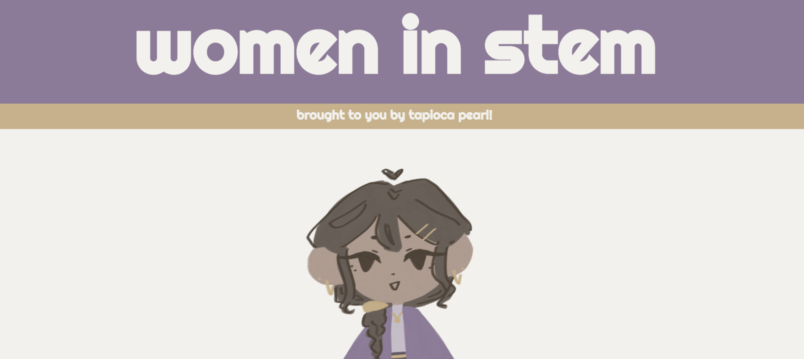

MindfulMagic is an app that is ready to assist you in any mood. Whether you are sad, happy, or just in a mediocre mood you can hop onto your app and have access to a wide array of tools. We aim to destigmatize mental health, and become a location for you to destress. It contains a Venting Journal, with Code Data, that is a space where you can express your feelings in hard times. Guided breathing sessions to calm down your breath after stressful situations. A "pop it" board that plays different satisfying sounds to help you through tough times. Lastly, a bingo card with different activities to go through when you need a break. (Project made in Kode with Klossy)
TED Talk: Beauty of Color in Literature
Representation in literature is something we need to see in all classrooms. Currently, people of color are not seeing themselves in books, lowering self esteem and shutting off their perspectives from others.

Women are a historically under-represented community in the field of STEM. This is why my friends and I created a project called "Women in STEM" with information about STEM women warriors and ways to seek internships in STEM.